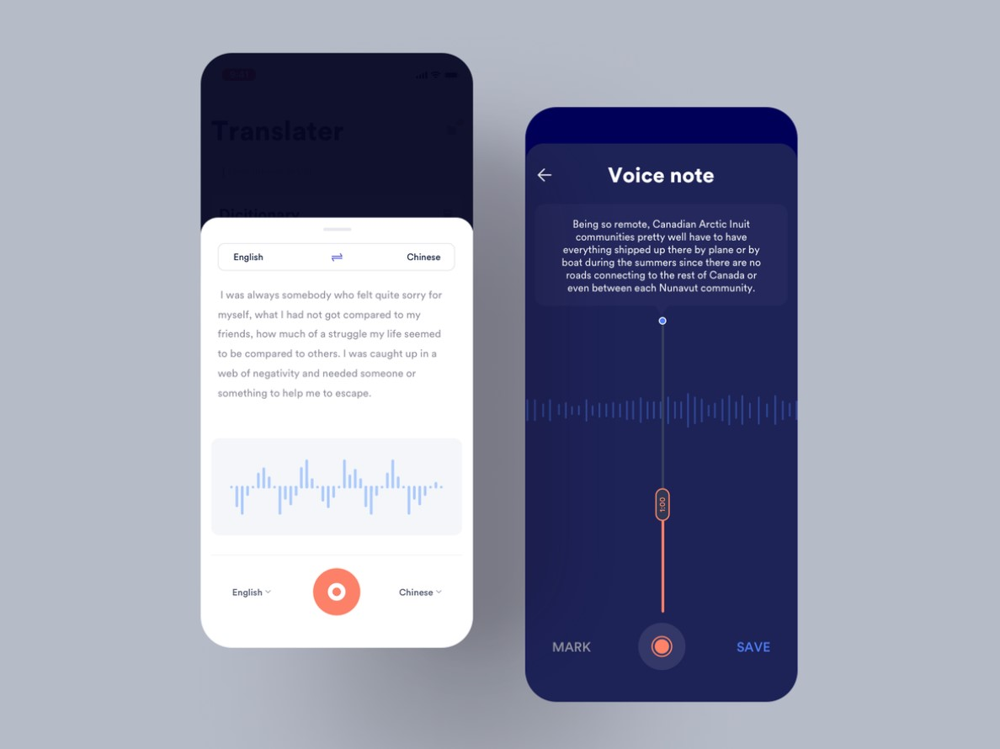
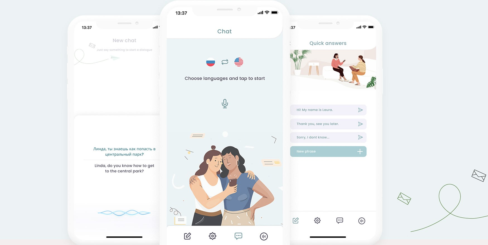

Воспринимаемость
У пользователей должна быть возможность воспринимать информацию любыми доступными способами. Незрячих людей сильно выручают голосовые помощники, озвучивающие информацию на экране. Искусственный интеллект помогает решать любые задачи: от чтения новостей до заказа товаров на Amazon.
Люди с нарушением слуха не могут посмотреть видеоролик без сурдопереводчика или текстовой дорожки. На видеохостингах, вроде Youtube, встроен автоматический перевод субтитров на разные языки. Этого недостаточно для комфортного ознакомления с контентом. Некоторые блогеры заказывают субтитры у профессиональных переводчиков. По такому пути должны идти и компании, которые хотят сделать продукт доступным для максимального количества пользователей.
Понятность
Информация в интерфейсе должна быть понятна всем. Если проект создаётся под нишу финансов, необязательно общаться с аудиторией исключительно на языке профессиональных терминов. Чем проще текст, тем лучше. По этой теме написано немало книг и есть даже специальное понятие «инфостиль». Рассказать о продуктах, компаниях и услугах можно по-разному. Продающего текста не существует, секрет успеха в простоте, доступности и фактуре.
В Соединённых Штатах есть тест F-K, который помогает определить уровень образования для понимания текста. Эталоном считается контент на уровне 5-го класса. Когда информацию может понять и учащийся школы, и бизнесмен с Уолл-стрит.
Дизайнеры обычно размещают в макетах текст-рыбу и не отвечают за качество контента. Задачу решает автор или редактор. После разработки в макет интегрируют блоки текста и медиаконтент для создания завершённого визуального образа. Специалист по графике может разработать структуру документа и повлиять на первое знакомство пользователя с контентом.
Надёжность
Кроме воспринимаемости и понятности важную роль играет надёжность. Это свойство подразумевает стабильность продукта. Обновление операционной системы или изменение продукта не должно влиять на важные функции. Люди с физическими особенностями часто не обновляют приложения, потому что боятся потерять доступ к полезным настройкам. Они жертвуют возможностями, чтобы продолжать использовать приложение.
Сайты редко обновляются в глобальных масштабах, а вот приложения постоянно улучшаются. Публикуйте новые версии продуктов только после тщательного тестирования. Не торопитесь с релизом продукта, если не хотите потерять часть аудитории.
Управляемость
Без доступа к функциям приложения оно становится бесполезным. Дайте людям возможность управлять интерфейсом любыми доступными способами. Голосовых помощников придумали не только, чтобы быстро узнать прогноз погоды. Они также решают задачи людей, которые не могут управлять своим телом. Пользователи с помощью Алексы, Сири и Алисы ищут контент, запускают фильмы и решают другие задачи.
Дизайнер должен разработать проект с максимальным охватом аудитории, потратить время на изучение особенностей восприятия информации, посмотреть кейсы и добавить в список инструментов новые сервисы и приложения.
Проверка дизайна на инклюзивность — сложная задача. Без интернета дизайнер вряд ли смог бы решить её. Сейчас можно опубликовать пост в социальных сетях, получить обратную связь и внести изменения в проект. Пользователи с нарушениями зрения или слуха с радостью придут на помощь. Они понимают, что от их сотрудничества зависит судьба ещё одного продукта, который будет спроектирован с учётом физиологических особенностей.
Откажитесь от стандартного образа пользователя, который повсеместно используется при разработке интерфейсов. Среднестатистический представитель целевой аудитории не отражает особенности всех групп пользователей. Смотрите глубже, сотрудничайте с разными людьми и создавайте проекты с упором на социальную ответственность.
Краткая формулировка принципов инклюзивного дизайна:
- Дайте одинаковые инструменты всем пользователям. Старайтесь найти эквивалент для людей с особенностями.
- Не забывайте о привлекательности. Люди с нарушениями зрения хотят не просто получить информацию, они тоже ценят красивый дизайн.
- Откажитесь от шаблонов. У пользователей разные паттерны поведения и необходимо учитывать всё.
- Разрабатывайте максимально простые интерфейсы. Если для понимания контента не нужна помощь Google, задача выполнена успешно.
- Представляйте информацию так, чтобы её могли понять люди независимо от их физических особенностей.
- Убедитесь, что интерфейс не утомляет пользователей.
Для работы с инклюзивным дизайном понадобится много времени и усилий. Дизайнер сможет гордиться своим проектом, а заказчики получат охват сегментов аудитории, которые раньше не могли взаимодействовать с продуктом.